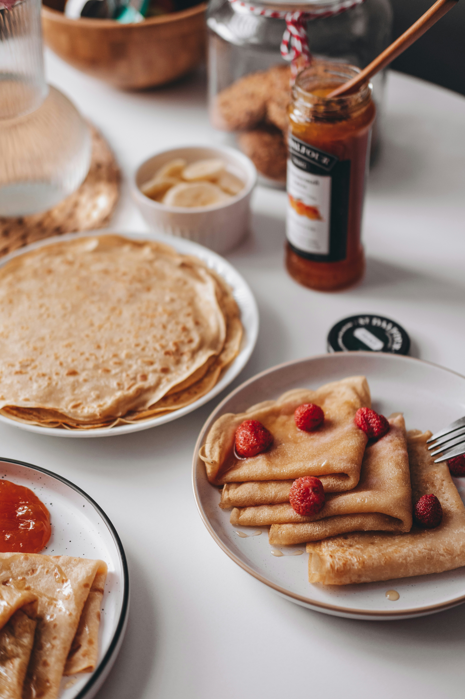

Crepes Recipe

Home
This is my Oma's special recipe. When my dad was a kid this is what she would make for breakfast every Sunday. It tastes great with maple syrup.
Ingredients
- 1 cup all-purpose flour
- 2 eggs
- 1 tbsp sugar
- 1 and 1/2 cup milk
- 1/4 teaspoon salt
- oil for frying
Instructions
- In a large mixing bowl, whisk together the flour and eggs.
- Gradually add in the milk, stirring to combine.
- Add the salt, beat until smooth.
- Heat a lightly oiled griddle or frying pan over medium-high heat.
- Pour or scoop the batter onto the pan, using approximately 1/4 cup for each crepe.
- Tilt the pan with a circular motion so that the batter coats the surface evenly.
- Cook the crepe for about 2 minutes, until the bottom is light brown. Loosen with a spatula, turn and cook the other side.
- Serve hot with your favorite fillings and toppings.